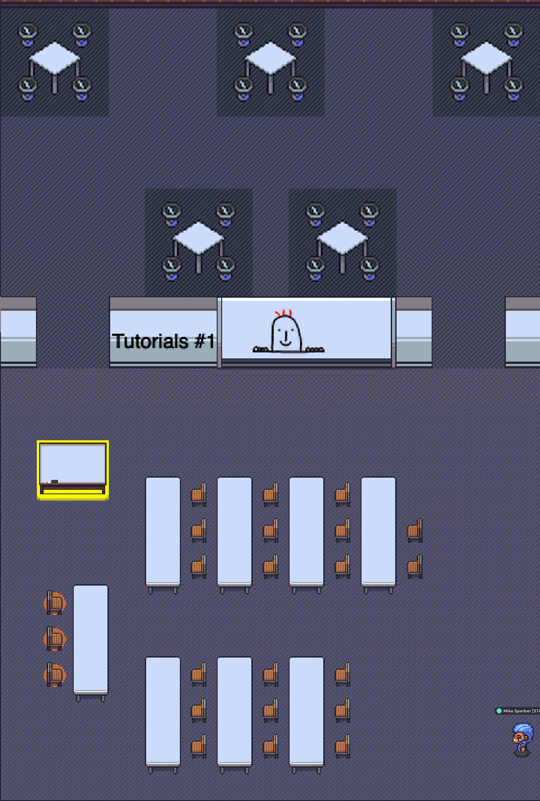

<div class="container">
    <div class="main" >
        <h1>How tutorials work at BOB</h1>

        <p>
            There are two parallel tutorial tracks during BOB in two
            adjacent rooms on the upper left hand side of the Gather space.  The
            tutorials will be accompanied by a BOB staff member to help with
            technical problems and admission control.
        </p>

        <h2>Tutorials #1</h2>
        <p>
            
        </p>
        <h2>Tutorials #2</h2>
        <p>
            
        </p>

        <p>
            The tutorial rooms allow 20 or less participants.  Everybody
            in the main space can be seen and heard by everybody else
            in that area.  This allows for a more interactive
            experience in the smaller tutorial setting.
        </p>

        <p>
            There also is a shared whiteboard in the room that can be accessed by
            pressing <strong>x</strong>.
        </p>

        <p>
            Additionally, there are private work areas to
            split out groups during the tutorial.
        </p>

        <p>
            You can use a combination of screen sharing, chat, the shared
            whiteboard, and group sessions to transport your content.
        </p>
</div>
</div>
